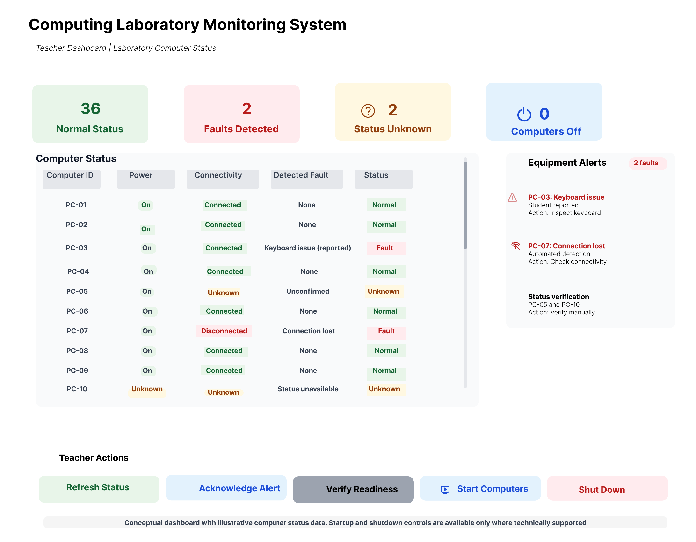

Project Overview
This project explores how human-centered automation could support teachers in managing school computing laboratories. The design is informed by my previous experience teaching Information and Communication Technology at Tamale Girls Senior High School in Ghana.
Preparing a computing laboratory for practical lessons involves checking individual computers, identifying equipment problems, troubleshooting faults, and confirming that computers are properly shut down after lessons.
I proposed a conceptual automated laboratory management system that would support routine monitoring activities through a teacher-facing dashboard while allowing teachers to remain responsible for important decisions.
The Problem
Having computers in a school does not necessarily mean they are ready for teaching and learning.
In a computing laboratory, teachers may need to start computers, check network connections, identify faulty keyboards or mice, respond to equipment problems, and verify shutdown after lessons.
These activities can take time away from practical instruction, especially when problems are discovered after students have started working.
Although automated monitoring could help with some routine activities, it introduces new challenges.
Monitoring information may be inaccurate or incomplete. Some equipment faults may not be detectable automatically. Teachers must therefore be able to understand system information, verify conditions, and intervene when necessary.
How can routine computing laboratory monitoring be automated without reducing teachers' awareness of laboratory conditions or their ability to make decisions and intervene?
Project Goals
- Reduce the need for repetitive manual checks of computer power and connectivity.
- Provide clear information about computer readiness and equipment conditions.
- Notify teachers about detectable equipment faults.
- Distinguish normal, faulty, unknown, and powered-off computer conditions.
- Support computer startup and shutdown where technically feasible.
- Preserve teacher authority to verify information, investigate problems, and make decisions.
Research and Design Approach
I used a literature-informed conceptual design approach grounded in human-automation interaction principles.
The process involved examining existing laboratory management challenges, analyzing current activities, allocating functions between people and automation, designing a dashboard in Figma, and considering representative operating scenarios.
1. Literature Review
Reviewed computing laboratory management systems and research on human-automation interaction.
2. Task Analysis
Examined laboratory activities before, during, and after practical lessons.
3. Function Allocation
Identified responsibilities for teachers, students, and automation.
4. Dashboard Design
Designed a conceptual teacher-facing dashboard using Figma.
5. Scenario Assessment
Examined normal operations, equipment faults, inaccurate alerts, and automation failures.
Task Analysis
I analyzed computing laboratory activities before, during, and after practical lessons.
The analysis drew on my previous teaching experience and helped identify repetitive tasks, possible equipment problems, and opportunities for automation support.
| Lesson Stage | Activity | Potential Problem |
|---|---|---|
| Before Lesson | Start computers | Some computers may fail to start. |
| Before Lesson | Check computer startup | Requires checking individual computers. |
| Before Lesson | Verify equipment | Some keyboard and mouse faults may remain unnoticed. |
| During Lesson | Respond to student equipment complaints | Interrupts instruction. |
| During Lesson | Troubleshoot faults | Takes time away from teaching. |
| After Lesson | Verify computer shutdown | Requires checking individual computers. |
| After Lesson | Check lights, fans, and air conditioning | Equipment may remain running. |
Function Allocation
A central part of the design was deciding which functions should be handled by automation and which should remain under human control.
The proposed allocation follows the principle that routine monitoring can be automated while teachers retain responsibility for decisions requiring judgment and intervention.
| Function | Allocation | Responsibility |
|---|---|---|
| Determine laboratory preparation needs | Human | Teacher decides when preparation is required. |
| Initiate computer startup | Human + Automation | Teacher authorizes startup. Automation executes where supported. |
| Check computer power and connectivity | Automation | System collects available status information. |
| Verify instructional readiness | Human + Automation | System reports status. Teacher confirms readiness. |
| Identify equipment faults | Human + Automation | System identifies detectable faults. Teachers and students report other problems. |
| Troubleshoot problems | Human | Teacher investigates and determines appropriate action. |
| Generate detectable fault alerts | Automation | System notifies teachers of detected problems. |
| Verify computer shutdown | Human + Automation | System reports status. Teacher checks unresolved cases. |
| Respond to automation failures | Human | Teacher uses manual checks and intervention. |
These allocations describe proposed system responsibilities, not implemented or validated capabilities.
Figma Dashboard Design
Based on the task analysis and function allocation, I designed a conceptual teacher-facing dashboard using Figma.
The interface is intended to help teachers monitor computer conditions, recognize problems, understand uncertainty, and take appropriate action.

Figure 1. Conceptual teacher-facing computing laboratory monitoring dashboard designed in Figma. All displayed values are illustrative.
The dashboard includes summary cards, a computer-status table, equipment alerts, and teacher-action controls.
Computer Status Information
The dashboard distinguishes four computer conditions.
These categories help teachers distinguish computers reporting normal conditions from those requiring attention.
The unknown category is particularly important because the system may not always have enough information to confirm a computer's condition.
A normal status also does not necessarily guarantee that a computer is ready for instruction. Some faults may still require manual checks.
Dashboard Features and Design Decisions
Status Summary Cards
Provide a quick overview of normal, faulty, unknown, and powered-off computers.
Computer Status Table
Displays individual computer conditions. Ten computers are shown at a time, with scrolling for additional records.
Equipment Alerts
Identify affected computers, describe problems, and support teacher investigation.
Unknown Conditions
Communicate when monitoring information is incomplete or uncertain.
Teacher Controls
Provide proposed actions for refreshing status, acknowledging alerts, verifying readiness, and initiating supported startup or shutdown.
Human Factors Principles Applied
Situation Awareness
The dashboard organizes computer conditions and alerts to help teachers understand laboratory status and identify problems requiring attention.
Function Allocation
Routine information collection and detectable fault alerts are assigned to automation. Teachers remain responsible for decisions that require judgment and verification.
Automation Transparency
The interface distinguishes detected faults from unknown conditions and provides information about affected computers.
Appropriate Trust
The design avoids assuming that all automated information is correct or complete. Teachers can verify alerts and investigate uncertain conditions.
Human Supervisory Control
Teachers retain authority to confirm readiness, acknowledge alerts, investigate problems, and intervene when automation cannot complete a task reliably.
Scenario-Based Assessment
I examined four representative scenarios to consider how the proposed system would communicate information and support teacher decisions.
| Scenario | Situation | Proposed System Response | Teacher Role |
|---|---|---|---|
| Normal Laboratory Preparation | The teacher prepares the laboratory for a practical lesson. | Displays computer power and connectivity information. | Reviews the dashboard, checks computers when necessary, and confirms readiness. |
| Equipment Fault | PC-07 loses network connectivity during a lesson. | Displays a connectivity alert identifying PC-07. | Investigates the connection and decides what action to take. |
| Inaccurate Alert | PC-05 is incorrectly reported as disconnected. | Displays an alert based on inaccurate monitoring information. | Verifies the condition and avoids unnecessary corrective action. |
| Automation Failure | The system cannot confirm whether PC-10 has shut down. | Displays shutdown status as unknown. | Checks PC-10 manually and shuts it down if necessary. |
These scenarios were used to reason about the proposed design. They do not represent empirical usability-testing results.
Design Outcome
The project produced a conceptual human-centered laboratory monitoring system and a teacher-facing dashboard designed in Figma.
The design integrates routine computer-status monitoring, detectable fault alerts, uncertainty communication, and teacher oversight.
The task analysis, function-allocation table, dashboard, and scenario-based assessment provide a foundation for future functional prototyping and usability evaluation.
Limitations
- The system is a conceptual design and has not been implemented.
- The dashboard has not been evaluated through participant usability testing.
- Some peripheral faults may not be detectable through automated monitoring.
- Inaccurate alerts may lead to unnecessary troubleshooting.
- Implementation would depend on compatible equipment, reliable connectivity, and technical support.
- The design is informed by one school context, so further research would be needed before applying it elsewhere.
Future Development and Usability Research
Future work could involve building an interactive dashboard prototype and conducting usability testing with ICT teachers.
An interactive prototype could be developed using React to simulate computer conditions, equipment alerts, teacher actions, and automation failures.
Usability research could examine whether teachers can understand dashboard information, identify problems, verify alerts, and respond appropriately to uncertain conditions.
Future evaluation could also examine teacher workload, situation awareness, trust in automation, and intervention effectiveness.
Skills Demonstrated
Human Factors | Human-Automation Interaction | Human-Computer Interaction | UX Design | Task Analysis | Function Allocation | Dashboard Design | Figma | Situation Awareness | Automation Transparency | Human Supervisory Control | Scenario-Based Assessment | Literature Review | Research Synthesis | Human-Centered Design
Project Reflection
This project allowed me to connect my previous teaching experience with my graduate studies in Human Systems Engineering.
Having experienced the challenges of preparing and managing computing laboratories, I wanted to explore how automation could support teachers without removing their ability to make decisions.
The project strengthened my understanding of task analysis, function allocation, dashboard design, and the importance of communicating uncertainty in automated systems.
It also reinforced the importance of designing technology around the people who will use it, rather than focusing only on technical capabilities.